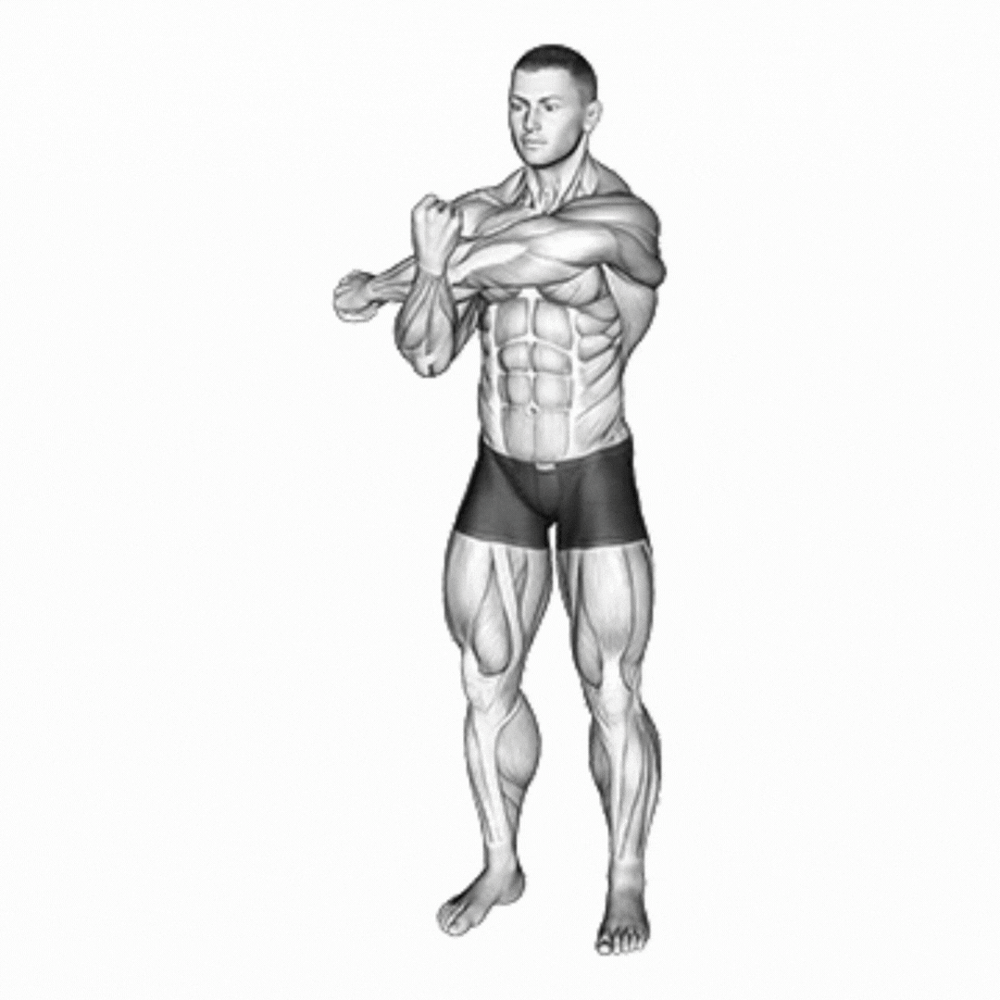

O Alongamento de Ombro com o Braço Cruzado é um exercício que visa aumentar a flexibilidade e a amplitude de movimento das articulações dos ombros e braços. Este alongamento é especialmente benéfico para indivíduos que passam longos períodos em posições fixas, como em trabalhos de escritório, ou para atletas que demandam amplo movimento dos membros superiores.
Para realizar o exercício, siga os passos abaixo:
1. Fique em pé ou sentado com a coluna ereta.
2. Estenda um dos braços na frente do corpo, mantendo-o na altura do peito.
3. Utilize a outra mão para puxar o braço estendido em direção ao corpo, sentindo o alongamento na parte posterior do ombro e do braço.
4. Mantenha a posição durante a contagem dos segundos, respirando profundamente.
20